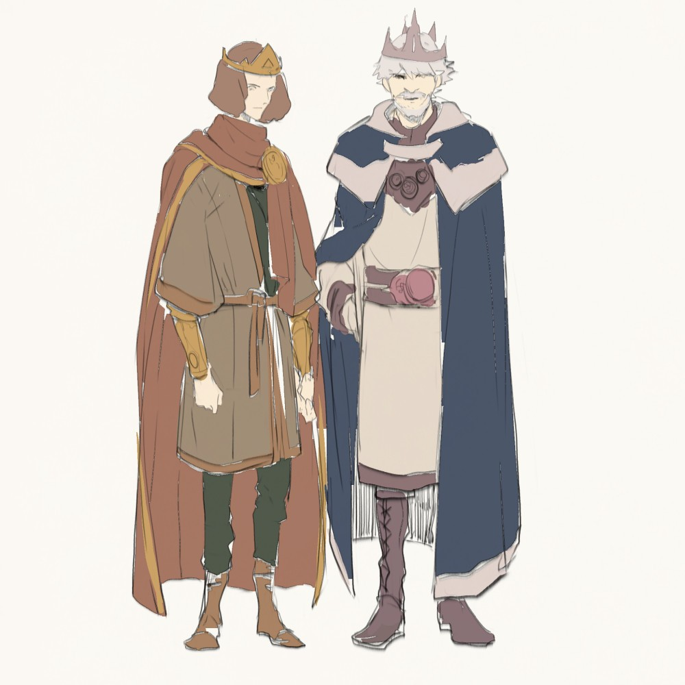
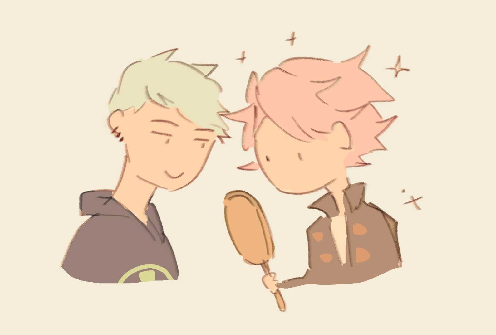

Creation Notes
Contents
Before it All
I had two characters and I wanted to write a story about them. It originally started out as some long epic melodramatic fantasy with too many plot holes :p
At any rate, the period before I officially began drawing this comic is murky and full of dangerous secrets. I wrote about it in a blog post some time back! If you dig far enough into my old art you'll find the artefacts of this dark past.
---------My biggest inspiration for creating this comic was the stories of Robin Hobb (especially the Farseer and Tawny Man trilogies. Those books changed my life). Megan Whalen Turner's Queen's Thief series introduced me to the wonders of court intrigue and witty dialogue. I've read those stories again and again. I love them still.
Art-wise, I was greatly influenced by Old Xian's Clown Danny. She's known for drawing a BL webcomic now, but before that she produced an absolutely gorgeous and intricate long-form comic that was never translated to english. I managed to grab a copy of each volume while visiting China. They now follow me wherever I go.
Whenever I'm stuck with storytelling, I refer to April's Song of the Long March. She's a rare comic artist with impeccable command of composition and pacing. The MC is an awful Mary Sue, but I fell in love with the worldbuilding and intricate plot and handsome husbandos anyway. Last I heard, she was making a lawsuit against her studio head and had put the series on hiatus. I'm still waiting for the story to continue...
Prologue (May 2015)
I distinctly remember drawing the first page in March, 2015. Back then I had about 70% of the story in my mind - the beginning, the end, and some important bits in between.
Since I wasn't much good at digital inking then, I drew all the pages on A4 paper with a 0.3 mechanical pencil. Producing that stack of comic pages was pretty satisfying! Those were good times.
The idea of a countdown was inspired by John Scalzi's Redshirts. I knew it would come in handy a few chapters down the road...
Chapter 1 (Aug 2015)
In my original plan, Chapter 1 was supposed to cover everything up to Aelis' fight with Marcos. Of course, when I drew the storyboard, I realised that really wasn't going to happen.
There isn't much happening in this chapter, though I did squirrel away clues here and there. I think the general mood of these early chapters is "something is moving beneath the surface but we don't know what it is".
Chapter 1.5 (Aug 2015)
Despite its short length, this was a landmark chapter that determined where the rest of the story would go. I was vacillating between a simple straightforward story and a longer, more symmetrical one. By the end of this chapter I had committed myself to the latter.
Looking back, that was a good decision. If it were a straightforward story I would have lost interest a long time ago! With a longer story I could spend more time exploring the world and the characters, which makes the process a much richer one.
Chapter 2 (Mar 2016)
Originally this chapter was 7 pages long and Marc was an asshole. After redrawing the storyboard 4 times and expanding it to 40 pages I decided he was a nice person after all (actually he's my second favourite person in the entire story).
I had just begun my medical course while drawing this chapter, and for a couple of months I was so overwhelmed with work I couldn't find the time to draw. During that time my drawing skills got pretty rusty so art quality in this one was could have been better :'D
Chapter 3 (May 2016)
This chapter wasn't supposed to exist, but I thought that later events in the story would appear forced without a copious amount of foreshadowing.
This was also the first chapter in which Verre displayed his obnoxiously flirtatious side. This chapter helped me get a better handle of Verre's personality and really influenced how I wrote about him later on.
Chapter 4 (Aug 2016)
This was the last chapter I drew with pencil on paper. The royal siblings are important characters in their own right, but I won't be returning to their story until much later. My BFF Bel was the one who picked the name for the boy king. I think it's a very pretty name :)
Chapter 5 (Dec 2016)
I only realised I could use reference pictures when I had almost finished the chapter... After that I started putting in a lot more effort into researching backgrounds.
I'm quite pleased with the city view at the beginning of the last scene. I spent three days copying it from Taschen's Cities of the World.
Chapter 6 (Apr 2017)

I went all out for the art for this chapter. Above are the patterns that were on the carpets and tapestries... I really like arabic geometric patterns, hopefully I'll learn to draw them someday!
This was a chapter not in my original plan, but I wanted to build the tension and tie up some loose ends.
Chapter 7 (Jul 2017)

I've always struggled between my vision and what I could actually achieve, but in this chapter I felt that the two were starting to come together :)
This is the tapestry in the king's audience room. Yes she's naked yes that's a unicorn no you can't see them in the comic.
Chapter 7.5 (Sep 2017)
While drawing this chapter, I was worried that people would misunderstand their relationship, and have certain expectations for the rest of the story.
So... if I had to explain, what happens in this chapter serves to contrast with the final state of their relationship at the end of the story. It touches upon one of the issues I wanted to explore - the relationship between physical intimacy and genuine connection.
If I write any more I'll be spoiling, so I'll leave it here. As I like to say, it's all in the later chapters!
Another story (Nov 2017)

You know you're overinvesting in a side story when you give names and personalities to every side character.
My favourite child is Carrot. Who's that? It should be clear when you read the chapter.
The scenery in this chapter is inspired by the English countryside, although the location names come from southern Spain! Ronda is a town in the middle of the mountains. I travelled there right after drawing this chapter, and the scenery was absolutely breathtaking.
My main reason for drawing this long side story was so that people could understand Marcos better. He's the most husbando character so please give him your love ?
Chapter 8 (Jul 2018)


It was challenging to figure out how their dynamic had changed after the incident in Chapter 7.5. I sat and thought long and hard about what I would do if someone suddenly kissed me. Probably scream and run away??? I had to write this chapter several times before it flowed smoothly. Sometimes I need to remind myself not to project myself too much on my characters...
In the original version of the chapter, Verre meets Malton to deliver a threat. But now it seems to have become a negotiation. Verre has mellowed a lot since my initial conception of the story... and Aelis has become a lot fiercer. But considering their backgrounds, this development makes sense.
------------------The second half of this chapter took a good long while to complete, as I was writing my senior thesis / studying for exams / traveling during the same period. I did manage to graduate with first class honours, so it was worth it! :)
The new character was designed by my bff in 2015, back when I was drawing the first chapter. She calls him 'Baby' so that's how I'll refer to him until his name is officially revealed.
My original conception of Baby was like Charles Grey of Kuroshitsuji, except more deranged. After my friend gave him a makeover, I found him a lot more likeable, and gradually re-imagined his role in the story. He's now a hidden main character of the story, and I hope to do him justice!
I've always found evil antagonists and righteous protagonists boring, because real people are much more complex than that. Personally, I find Baby to be a more relatable character than Aelis, though it'll be interesting to see what readers think of each character as the plot unravels.
Chapter 8.5 (Oct 2018)
A very short interlude. I won't explain too much, if you've read all the chapters in one go you'll see where this is heading...
Chapter 9 (Dec 2018)
Compared to previous chapters, when working on this one, I definitely made speed more of a priority. I wanted to have a bit more momentum so that each chapter doesn't take so long to finish.
Chapter 8's colour scheme didn't sit well with me, so I tried to improve the colour scheme in this chapter. It was a big struggle , until I recalled James Gurney's gamut masking trick (google it if you don't know what it is, especially if you draw!). I created a new colour scheme using that technique, which made things much easier on the eye. It also meant that I had to recolour half the chapter, but the effort was well worth it. I'm quite happy with how this chapter looks.

And with this chapter, we're nearing my favourite parts of the story... *rubs hands excitedly*
Chapter 10 (Apr 2019)
This chapter was easy to plan but difficult to draw, which is the opposite problem I have for most chapters! There were quite a few panels in this chapter I had to redraw because I didn't get it right the first time.
Felicia took a more proactive role in this chapter than I originally planned. But given her personality and training, it wouldn't make sense for her to wring her hands helplessly! I spent months thinking about how Verre's wound would realistically be managed without modern medical equipment. Verre would have been given fluid resuscitation, antibiotics, and emergency surgery in today's world, but all of these are recent medical developments...
And yes, a new character makes her appearance this chapter! Isn't it a bit late in the story to throw in a new character? Well, she's not that new! Her presence looms in the early chapters, and her role in the story will become clearer soon.
Chapter 10.5 (May 2019)
There was originally more internal monologue in this half-chapter, but I removed them in favour of silence.
Aelis becomes increasingly opaque as the story progresses. I wanted to spend some time on him because we won't get to see inside his mind until many chapters later.
Chapter 11 (Sep 2019)
A turning point in the story! It seems like time travel stories are all the rage these days, but there are deeper layers to this story which made it interesting for me.
I loved reading about cosomology as a child, and it still heavily influences me today. Verre's world is based on the "open univerise" model, which says that the universe will keep expanding forever until stars and physical forces fall apart. Of course, it happens on a extremely long time scale -- hundreds and billions of years. This detail will become significant later.

Above are a couple of colour palettes I used in the chapter. It took me three years to learn to record my colour choices and another to learn to add labels to them :'D
And, strangely enough, one of the most difficult parts of drawing a comic is keeping the small details constant. In some panels I forget that Aelis is left-handed, that Verre injured his right hand, that the table in the corner is yellow and not dark brown... only to discover these mistakes when I'm almost done with the chapter!
Chapter 12 (Nov 2019)

Unlike many previous chapters, which were completely formed in my mind before I started drawing thumbnails, I only had a vague idea of what happens in this chapter. I knew what the start and end points were and what needed to be conveyed, but how these points were conveyed were very much up in the air.
The first draft was different from what I had imagined, and the second draft turned out to be very different from the first! Seeing as to how much things have changed, I decided to do a third draft to smoothen out the creases. I agree with my favourite comic creator April when she said: most of the effort in making a comic goes into the planning stages. The actual drawing and colouring is brainless work.
Baby's name is revealed in this chapter! When my friend suggested "Rien" back in 2015, I thought it was an odd name, given the word's meaning in French. As I developed the story it seemed more and more fitting.
A note on the System: it's a "recursive self-improving artifical intelligence", a phrase I couldn't quite fit into the speech bubbles! However, when we talk about superhuman AI in popular culture, that's what we're usually referring to. The System would likely have a quantum computing component too, which enables it to model all the possible timelines in Aelis' world. Quantum computers require ultra-low temperatures and isolation from the environment, which also explains why the system is hidden in deep space.
-------------------------------The backdrop of Rien's mission in my mind's eye was a city in the easternmost reaches of Europe. I researched photos of Georgia, Bulgaria and Cyprus for reference.
I'm not a fan of gore, but if it helps the storytelling I won't shy away either. Eviscerated people are always depicted in shows with pink tubes spilling out of their belly. Truth is, the intestines are connected by sheets of fatty and lymphatic tissue called the omentum, so spilled guts look pink AND yellow (yep I'll stop being gross now :p).
I was placed at a transplantation unit while working on the second half of this chapter, so I got to experience first hand how it felt to be burnt out while armpit-deep in someone's innards. I walked away form the placement with a healthy respect for all transplant surgeons. If you thought your job was hard, try hunching over someone's bloody guts, putting minuscule stitches in squishy, slippery vessels for ten hours at a stretch! (ok, I'll really stop now.)
Chapter 13 (March/May 2020)

{kind=link}
{kind=link}
{kind=link}
{kind=link}
{kind=link}
{kind=link}
{kind=link}
How much do we owe each other? How much can we allow others to take from us, how much do we give? Religions and social movements have taught us that unconditional patience and forgiveness are the answer. Yet, during my medical training this year, I've seen the trauma that people can callously inflict on others with so little consequence. A two-year-old girl who was raped, an eight-year-old boy who knows that his father will kill everyone in his family, drunkards who threaten violence against a kindly couple who fostered their children... faced with this, the mantra of waiting and forgiving suddenly seems flimsy.
I was apprehensive about how people would interpret this chapter. I can already think of one friend IRL who will read this and accuse me of condoning a toxic relationship! But reality isn't always so cut-and-dried. People trapped in unhealthy relationships can have valid reasons for being unable to break free, while selfish and damaged people can try to be better (even if they don't always succeed). Personally, I'm all for proud singlehood and all that. But even as I disliked Martha's decisions I could sympathise with her.
--------
What Martha says while tending Rien's wound is a quote from Isaac Asimov's Foundation which I read eight years ago. Somehow the quote got carried around in my subconscious until it made it onto the page and I had to ask Google where it came from! While my taste in books has shifted and I no longer worship Asimov as much as I did, his stories about artificial intelligence continue to have a profound influence on how I think about computers and humans.
On a more prosaic note, this chapter was the first time I made my iPad a main part of my comic workflow. It's fantastic for notes, thumbnails and rough lineart. I've made speed a greater priority with this chapter, for after writing chapter outlines I realised I have two years of work left to go -- but hopefully less, if I make the most of this lockdown.
Chapter 14 (May/June 2020)
This chapter was drawn at twice my usual speed, partly because of the lockdown and partly because of my lovely, supportive and cursed fellow creatures on Discord TvT♥
In the first draft of this chapter, Rien gave a backhanded motivational speech to Jenna. However from the second draft onwards he took a completely different tack.
In medical school we get lots of talks on career planning, and the one thing I took away is that, we don't really know whether we'll like doing something until we try doing it. Who would have imagined that they'd one day become a urologist, a gastroenterologist, or pathologist? There are lots of essential and fulfilling jobs that are hidden from public view, which we would never have thought of pursuing when fresh out of school.
Mainstream culture tells us to chase our dreams with abandon, and we artists are particularly susceptible to this motivational narrative. However, it presents us with a false dilemma of pursuing art or giving art up altogether.
Choosing a non-art career doesn't mean we have to give up on making art. Instead, like the citizens of le Guin's utopia Anarres, we can make art an integral and functional part of daily life. Drawing a comic taught me how to develop ideas clearly, which helped me with my senior dissertation in genetics. On the other hand, medicine showed me parts of society I had previously been unaware of, making Memorabilia a more wide-ranging story than it originally was. They say that we can't have it all. But often, we can choose to have both.
Chapter 15 (Sep 2020)
When I drew chapter 1.5 five years ago, I could already see what would happen in this chapter. All the plotting and scheming has finally come to fruition! I had fun drawing this chapter since I knew exactly how it would look.
There's a piece of common wisdom that tools don't make the artist, but when I worked on this chapter I learnt it simply isn't true. If you noticed a jump in art quality between chapter 13, 14, and 15, that's because I was drawing with an awful laptop screen, a decent laptop screen and a fantastic desktop screen for each respective chapter. Having a high-res display is a boon for drawing detailed lineart, I cannot recommend it enough.
(I also tried switching from my intuos to a cintiq, but ended up returning the latter. Lots of artists say that drawing displays are better for lineart, but I disagree. You can tear the intuos from my cold dead hands.)
Chapter 16 (Nov 2020 -Jan 2021)

What a challenging chapter! I had to do four drafts of this chapter before finally feeling happy with it. There were quite a few threads to tie in, but most important was the final exchange between Rien and Verre, for I had to make it consistent with their meeting Chapter 9.
The earliest drafts in my head were some sort of technical treatise on how to assassinate an emperor, and how one person might bring an empire to its knees. However I abandoned that approach as I began storyboarding this chapter, choosing to focus on character interactions above logical airtightness. Ultimately, the focus of this story is more on the characters than the world they inhabit, and there was where I decided to keep the focus.
The Emperor is a character that surprised me as I wrote him. Originally nothing but a “happy fool” from the prologue, he turned out to be guarded and calculating in his own way, even as he harbours a deep, fiercely cherished naïveté. Detesting cynicism, he was happy for Verre to scheme and intrigue on his behalf. More on him later because the next few chapters are all about him.
Anyways, I’m relieved to have finally reached this point in the story. When I drew chapter 1.5 five years ago I knew that I would eventually have to close this loop. And I have.
(For the curious, I’ve released the first draft of this chapter, which you can see in this public Patreon post.)
Chapter 17 (Jan - Apr 2021)

This was a chapter that I’ve been planning for the longest time. You can see some glimpses of it in Chapter 8, during Verre’s conversation with Malton.
Verre's internal monologue during his final moments with the Emperor was based off William Blake's Auguries of Innocence. I only found that out while writing the chapter. I initially thought it it came from the buddha üò≥
James Gleick's Chaos, Ray Bradbury's A Sound of Thunder,Ted Chiang's Anxiety is the Dizziness of Freedom were all inspirations for this part of the story. Many time travel fictions make the assumption that we can reshape the world if we travel back in time. However, chaos theory tells us that it isn't possible. Every intentional change we make to the course of events will have thousands of unintended consequences.
While flipping through old chapters I found that the iPad wasn't doing anything for my art quality, so I've gone back to an all-intuos workflow. It might be strange but I feel a lot more comfortable with a graphics tablet than a drawing display. Half of this chapter was drawn with the cheapest wacom tablet on the market (One by Wacom, CTL-672) and it wasn't hugely different from using the intuos pro on my desktop setup.
Due to the complexity of the ideas in this chapter (and the limited pages to convey it in) I asked three creative friends to have a look over the script. Thank you Maf, Sol and Monotone-ink for your support and feedback ❤
Interlude: My Sun (May - Aug 2021)

I love planning these touchy-feely stories, but drawing them, properly, is another matter altogether! Reliving the same emotional beats again and again while iterating through the chapter makes it fade, after drawing the chapter I wonder if it's as impactful as I wanted it to be.
I'm no big proponent of romanticism, but it sure makes for a better story. Nothing fires us up like a romantic pursuit, whereas stable relationships don't make for very exciting narratives... or perhaps I'm young and foolish and I only want to write characters acting young and foolish too.
A lot has happened in my life while drawing this chapter (graduating from medical school, starting my first job in a new place). Looking back at this time last year, having lots of time to draw during lockdown definitely improved my art quality, but I hope I can maintain my speed and quality even as I start working.
This chapter was inspired by one of my favourite songs. Once you hear the lyrics you'll understand the link:
Chapter 18 (Sep-Oct 2021)
{kind=link}
Remember when Felicia was exclaiming at the cold weather in chapter 8? That was in preparation for the snow in this scene. It's such a relief to have finally closed the loop, I always thought that by this time I'd have either finished or given up on the comic...
Aelis with brown hair is something I've wanted to draw for a long time. I considered (very seriously) whether I was going to give him black hair, but that would make him too similar to Marcos or the Emperor.
I've become a lot faster at drawing comic pages now, after having drawn almost 700 pages. The trick is to zoom out a lot when drawing lineart and to batch-colour your pages.
Chapter 19 (Nov 2021 -Mar 2022)

I really hit a rut while drawing this chapter, because sadly I’m not as invested in these side characters as I am in the main cast! But the church and father scenes gave me the motivation to keep going.
Verre and Aelis’ final interactions were rather hard to pin down. There was some romantic subtext in the earliest drafts of the story, but after I went all in with the emperor backstory I realised it wouldn’t make sense — Verre’s still hurting too much and Aelis, well, sees Verre mostly as a pervert he owes his life to. A deep connection wasn’t going to develop within the frames of this story, and that’s fine. In my headcanon Verre will reappear in Aelis’ life several times. Hopefully during these encounters he’ll make a better impression!
The side plot involving the Soreir contained some of my opinions towards public vs private healthcare — back when I was still a medical student. It’s easy to say that public healthcare is virtuous and private healthcare is extortionate. But once I started working as a doctor I no longer have such glowing feelings towards public healthcare. So many of my colleagues in public healthcare are overworked, underpaid, and deprived of training opportunities, I’m no longer surprised that healthcare workers leave for the private sector when the opportunity presents itself. (To give you a sense of how much doctors are paid here, my hourly wage here is the same as an amazon warehouse worker. I checked, and considered switching careers for a moment...)